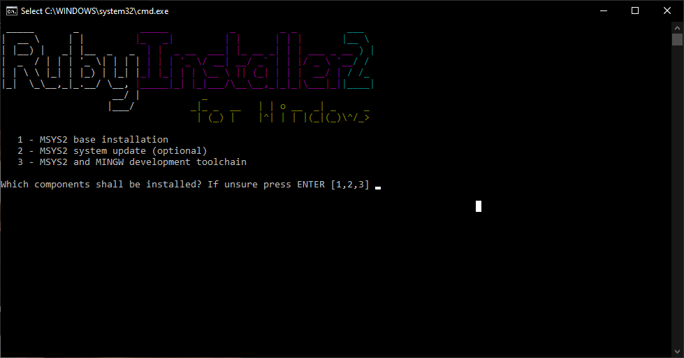
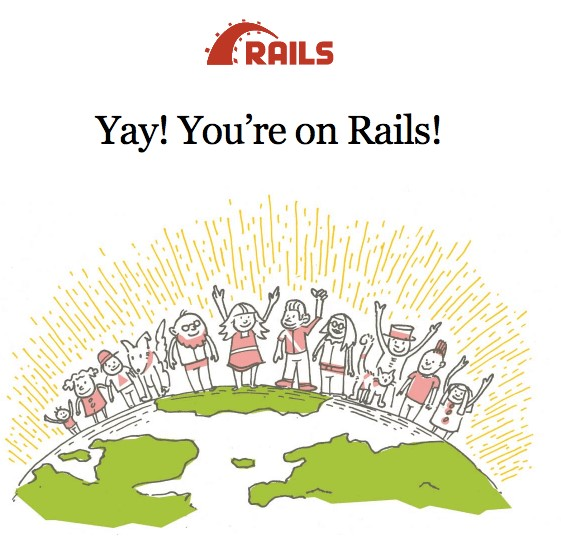
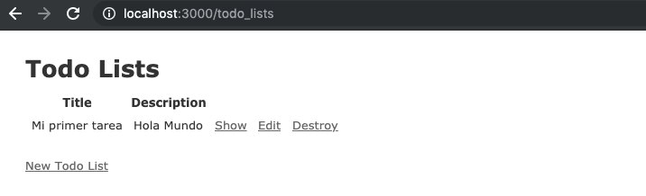

Cómo crear una aplicación con Ruby on Rails
Nota: Ruby on rails es un lenguaje de scripting y funciona de manera similar a Python en el sentido que se interpreta en el tiempo de ejecución. Esto quiere decir que nuestro código será independiente a la plataforma en la que se ejecute siempre y cuando tengamos el Interprete de Ruby correspondiente instalado en la máquina de destino.
Primero hay que instalar Ruby on Rails para nuestro sistema operativo
Para MAC OSX: Mojave
Para Linux (Manjaro)
Para Windows:
Cómo crear una aplicación TODO en Ruby on Rails:
Primero hay que montar nuestro servidor como lo hicimos en Django
Abrimos una terminal y navegamos al directorio de nuestra preferencia
cd Desktop
mkdir Projects
cd Projects
rails new todo
Rails automáticamente va a crear varios directorio
cd todo
ls
rails server
Verificamos si podemos correr nuestro serviror al navegar a localhost/3000
Si vemos la siguiente pantalla lo hemos logrado con éxito
Para la parte siguiente vamos a trabajar con Github
Seguir los siguientes pasos para crear nuestro repositorio:
git init
git status
git add .
git status
git commit -m "first commit"
git remote add origin https://github.com/USERNAME/todo.git
git push -u origin master
Después vamos a utilizar una herramienta de Rails llamada "Scaffolding" la cual nos permite generar de manera automática los modelos, vistas y controladores (del mismo modelo que vimos en Django) necesarios para una tabla.
rails g scaffold todo_list title:string description:text
Ahora para persistir todo vamos a correr un comando que nos permite migrar una base de datos:
rake db:migrate
y vamos a correr nuestro servidor de nuevo con la siguiente ruta: https://localhost:3000/todo_lists
rails server
Ahora tenemos nuestra vista simple gracias al Scaffolding que hicimos
Ahora vamos a abrir nuestro archivo config/routes.db y lo vamos a editar de la manera siguiente:
root "todo_lists#index"
rails g model todo_item content:string todo_list:references
Con esto estamos creando un modelo que va a almacenar los datos del todo list
rake db:migrate
Actualizamos todo_list.rb a:
class TodoList ApplicationRecord
has_many :todo_items
end
Actualizamos routes.rb
Rails.application.routes.draw do
resources :todo_lists do
resources :todo_items
end
root "todo_lists#index"
end
Y corremos:
rake routes
Esto va a causar a que ahora al entrar a localhost/3000 veamos nuestra app en vez de la pantalla de bienvenida a rails
Ahora vamos a generar un controlador para los items de la lista:
rails g controller todo_items
Actualizamos todo_items_controller.rb :
class TodoItemsController ApplicationController
before_action :set_todo_list
def create
@todo_item = @todo_list.todo_items.create(todo_item_params)
redirect_to @todo_list
end
private
def set_todo_list
@todo_list = TodoList.find(params[:todo_list_id])
end
def todo_item_params
params[:todo_item].permit(:content)
end
end
Terminamos de configurar los metodos como el destructor:
def destroy
@todo_item = @todo_list.todo_items.find(params[:id])
if @todo_item.destroy
flash[:success] = "Todo List item was deleted."
else
flash[:error] = "Todo List item could not be deleted."
end
redirect_to @todo_list
end
Ahora hacemos nuestros commits de nuevo y empujamos el codigo:
git status
git add .
git commit -m "incluimos funcionalidad de todo lists
git push
Podemos acceder a el codigo completo en github.com/maravilla/todo
Accedemos a nuestro servidor y podemos verificar que ha sido guardada nuestra tarea.

Para correr nuestro programa en Windows podemos seguir el tutorial de como instalar Ruby on Rails en Windows y de una manera sencilla importar el codigo, navegar al directorio en una terminal y correr nuestro servidor de Rails en ese directorio.